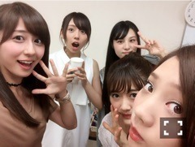
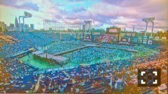

| 2016/09 02 Fri | 斎藤ちはる セブン〜セブン〜(´>∀<｀)ゝ |
ちはるーむへようこそ( ◦˙ ˙◦ )
今日は
「乃木坂46 セブン-イレブン限定ミニライブイベント」
でした〜！！！
沢山の方が来て下さって
嬉しかったです！
有難うございました\( ˆoˆ )/
アルバムを中心に、
表題曲やアンダー曲を披露しました(﹡ˆ ˆ﹡)
アンダー曲は
「不等号」
「嫉妬の権利」
「君は僕と会わないほうがよかったのかな」
「別れ際、もっと好きになる」
を披露しました〜！！
ダンスナンバーが多くて
踊っていて楽しい限りです\( ˆoˆ )/
でも踊りに集中しすぎてたら
不等号のサビの時に声が
一瞬だけ裏返ってしまった。。( ;o; )
気付いた方いたかな( ;o; )
愛未と真洋には気付かれてた( ;o; )笑
ライブ後にパチリ♡

まいちゅん、伊織、ひなちま、愛未！
-------------------------♡
昨日忘れちゃってた( ;o; )！
#chihashot

楽屋に、会場を一望できる
カメラがあるんだけど
空の色と、座席の色が綺麗すぎて
思わず撮ってしまいました(_ _).｡o○！！
近くにいた蘭世にも
それ送ってください〜♪
って言われたから送ったよ(﹡ˆ ˆ﹡)
神宮って素敵な場所だな〜と
改めて。
-------------------------♡
♬ ChihaMusic
「ジターバグ」ELLEGARDENさん
テンポが良いので
壮快感がたっぷりで
聞いてると元気を貰える！
歌詞も背中を押してくれる。
"遠回りするたびに見えてきたこともあって
早く着くことが全てと僕には思えなかった"
かっこいい( ;o; )！
秋なので茶色を着たい、斎藤です。
斉藤じゃないよ。
齋藤じゃないよ。
齊藤でもないよ。
斎藤だよ。
ちはるだよ。
因みに、私がセブンに行った時に
よく買うのは
大学芋とアップルマンゴーだよ。
自然解凍なんだけど
とっても美味しくてハマるよ。 :-)))
おやすみ〜
斎藤ちはる